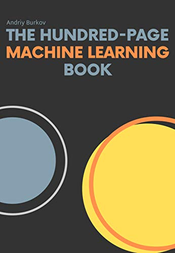
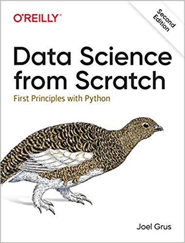
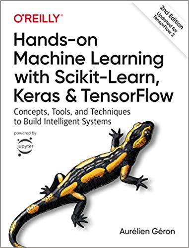

This summer I've been reviewing a broad range of potential textbooks for our "AI for the Humanities" course this fall. For a standard AI course this would be a simple task. Many excellent educational resources have proliferated over the past several years since we started our course.
However, ours is not a standard AI course for a number of important reasons:
- Widely disparate backgrounds: Some have had years of college math and programming and others have none
- Widely disparate interests: Our class has roughly split evenly between STEM/Econ and other Liberal Arts majors like the Humanities and Social Sciences
- Broad coverage of AI from Good Old Fashioned AI (GOFAI) to current research trends on ArXiv
- Cross-disciplinary integration across and between the Liberal Arts and AI
Artificial Intelligence has traditionally been a graduate-level specialization with perhaps an introductory course or two at the undergraduate level. Carnegie-Mellon University just launched the first undergraduate degree in AI last fall 2018 and was quickly followed by MIT and IIT Hyderabad. Typically, AI courses were taught in Computer Science and Engineering so a common goal and base of mathematical and statistical knowledge could be assumed.
My survey of current AI and ML courses at top institutions like Stanford, MIT, CMU, Berkeley, Columbia, UBC, etc. show a clear aversion to following one particular textbook relative to comparable specialized CS courses in OSs or DBs. This is in part due to the rapidly expanding subtopics within AI/ML that no one text can cover. It is also due to the rapid pace of innovation in the field as well as the growing number of excellent online resources available for free which I have to review and update every semester.
Nonetheless, we need to present students with a common core of topics that give them both a coherent understanding of current AI/ML as well as prepare them to continue more advanced studies. A core body of knowledge emerges from my survey of the top dozen+ AI/ML text and trade books with many variations at the edges. Discretion exists in deciding how deep to teach each subject, which important future trends to introduce and how deep into the programming and math we go.
As of July 2019, here are my textbook recommendations for our third year teaching "AI for the Humanities". As in years past, we'll supplement these with many online resources such as textbooks, API documentations, interactive visualizations, hosted Jupyter notebooks and select video lectures. As in years past, I also have many recommendations ready for potential outliers ready for more challenging approaches to core topics.
(A) For the first 1/3 of the course covering Python, key python libraries and basic machine learning:
Data Science from Scratch: First Principles with Python, 2nd Edition, by Joel Grus, O'Reilly (2019)

(B) For the last 2/3 of the course covering Keras/Tensorflow and fundamental Deep Neural Network architectures/models:
Hands-on Machine Learning with Scikit-Learn, Keras and TensorFlow: Concepts, Tools and Techniques to Build Intelligent Systems, 2nd Edition by Aurelion Guron, O'Reilly (Sept 2019 in print - available online now)

In addition to the core technical topics, we also motivate and integrate our study of Artificial Intelligence with the many and growing connections it has with fields in the Liberal Arts and professions like Medicine, Law and Public Policy. Digital Humanities is the natural conduit to demonstrate how AI/ML technology is being incorporated into virtually every academic field including Comparative Literature, Studio Art, Environmental Studies, History, Political Science, Psychology, Synthetic Biology, Quantitative Finance and many more.
We carefully synchronize and select Digital Humanities research to map to the sequence of technical topics we cover. The goal is to demonstrate best practices of integrating AI/ML with a broad range of academic fields representative of our students likely backgrounds and interests. For example, for literature students we introduce and discuss some of the challenges and opportunities using sentiment analysis, topic modeling and semantic space embedding to augment human literary analysis. Generative adversarial networks can be used as tools to inspire or 'create' new music, choreography, paintings and poems. Economics and Environmental Studies students can apply a wide variety of sophisticated modeling and time series analysis to help augment and extend the reach of their research interests.
As the fall semester approaches, I'll update our course website with the exact details of our Digital Humanities selections.